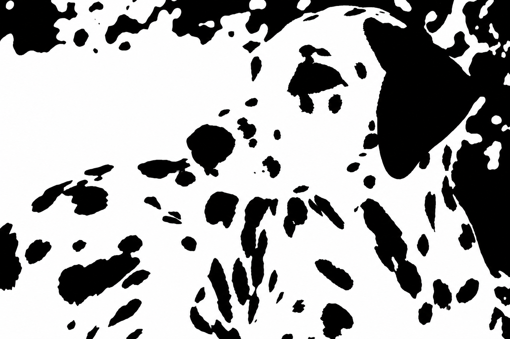
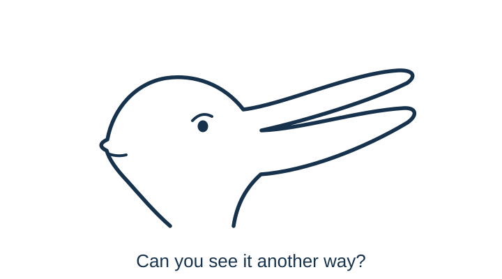

4 Predictive Mind
Perception Is Inference
“As a man is, so he sees. As the eye is formed, such are its powers.”
— William Blake, letter to the Reverend John Trusler, 23 August 1799
Look at Figure 4.1 for a few seconds. What, if anything, do the patches represent? Write down your first interpretation, or note that you cannot yet find one. The grayscale source image appears in the final section of this chapter. Leave it until then, so that you can compare your first impression with what you see after the reveal.

Removing the intermediate shades of gray makes it harder to tell which patches belong to the same object, which mark shadows, and which belong to the background. The visual information reaches your eyes, but its organization may remain unclear. Some readers will recognize the scene immediately; others will need a cue. Keep your own response in mind as we ask how an internal model gives sensory information meaning.
Learning goals
- Explain perception as inference rather than recording.
- Describe priors, sensory evidence, prediction error, and precision in plain language.
- Explain how bodily regulation can anticipate the effects of an action, using thirst as an example.
- Distinguish perceptual prediction from a decision forecast, and specify an observation that could distinguish two competing interpretations.
How an internal model organizes experience
An internal model represents learned relationships: what objects tend to look like, which features belong together, and what usually happens in a particular setting. It allows incomplete sensory signals to be interpreted in the light of experience. This need not be a literal picture stored in the brain or a consciously chosen explanation. The relevant knowledge can be distributed across many learned associations and levels of representation (Clark, 2013; Kersten et al., 2004).
In the opening image, a useful interpretation would connect scattered patches into a coherent arrangement. You may already know the kind of object depicted without yet recognizing it in this unusual form. The difficulty can lie in connecting the current signals to existing knowledge. A later cue may make that connection possible.
A more familiar example is walking into a dim kitchen. You recognize the table before you can make out all its edges. A shape beside it is probably a chair, although a coat draped over the back makes the outline uncertain. Familiarity with the room supplies a plausible account before every detail is visible. Moving closer can confirm it or reveal that you were mistaken.
The idea of perception as inference goes back at least to Helmholtz: the mind uses incomplete signals to infer their causes without requiring conscious calculation (Helmholtz, 1867/1962). Later accounts differ in how they explain this process (Gregory, 1980; Knill & Richards, 1996; Rock, 1983). A prior is an expectation formed before the current evidence is considered. In the kitchen, familiarity makes a chair a plausible interpretation; clearer sensory evidence can change that judgment.
Which learned expectations come into play depends partly on context. Surrounding objects, words, and situational cues can activate different interpretations and change the weight given to them. The same input can therefore acquire different meanings in different settings. Predictive processing offers one influential family of models for how these expectations and incoming signals might interact (Clark, 2013). The following demonstrations make the role of context visible before we examine that proposed mechanism.
When context changes what appears
Read the middle symbol in each row of Figure 4.2. Its shape is identical in the two rows, but the neighbors invite different readings. The surrounding numbers make a numerical sequence relevant; the letters make the alphabet relevant. Both are familiar structures learned through experience. Context makes one interpretation easier to access. How much of your reading came from the mark, and how much came from its setting?

Before reading the caption, name the animal in Figure 4.3. Then try to find another animal without rotating the image. The challenge is to reorganize the same marks, not discover a second hidden drawing.

Once one interpretation takes hold, the parts seem to fall into place: the same extension that was a bill becomes an ear. What is already accessible in memory is one possible influence on which reading arrives first. Around Easter, rabbits may be especially accessible to people familiar with that celebration. Brugger and Brugger (1993) reported a striking seasonal pattern: Zurich Zoo visitors tested on Easter Sunday predominantly named a rabbit, whereas a different group tested on an October Sunday predominantly named a bird.1
The seasonal story also needs an update. A later study conducted in the weeks around Easter found predominantly bird responses, failing to reproduce rabbit predominance (Dudda et al., 2026). The evidence for a seasonal influence is mixed. The drawing makes the perceptual point directly: one set of marks can support more than one coherent interpretation.
The symbol and the ambiguous animal show how the same marks can support different identities. Context also changes the apparent properties of something we already recognize. The next demonstrations let us compare an appearance with a measurable property. Shadows, shading, and even synchronized touch have been used to study how sensory signals are organized into an experience (Adelson, 2000; Ramachandran, 1988; Botvinick & Cohen, 1998).
In Figure 4.4, the paired shafts, centre circles, and grey patches are physically identical within each comparison. The surrounding geometry or luminance changes their appearance. Measuring the target can correct the judgment without necessarily turning off the impression.

Look first at the isolated light on the left in Figure 4.5. What color would you call it? Now look at the upper lamp on the right. Both show the same lens, but only the right supplies its familiar setting. Does recognizing the traffic signal make the upper light seem redder?

The scene brings learned knowledge into play: in a familiar vertical traffic signal, the top lamp is red. Recognizing the signal makes red an expected interpretation of the upper lens. The isolated circle offers no such positional clue. Cover the housing and lower lamps, then reveal them again; notice both the color you assign to the lens and how it appears.2 The context tells us what the sensory evidence is likely to mean.
Laboratory studies capture a related influence of familiar colors. When observers adjusted banana images until they looked gray, they shifted them slightly toward blue compared with their gray settings for unfamiliar control patches—the direction opposite to a banana’s familiar yellow (Hansen et al., 2006). Related effects occur for familiar manufactured objects whose typical colors are learned through experience (Witzel et al., 2011).
The blue-green scene also supplies information about illumination. Color constancy helps an object’s perceived color remain relatively stable as illumination changes: a white shirt can still look white in warm indoor light or cool daylight (Foster, 2011). Interpreting a scene can change that judgment. In a laboratory demonstration, changing the perceived folding direction of a card changed its apparent color in a way consistent with altered interpretation of light reflected between its surfaces (Bloj et al., 1999). The familiar object and the light falling on it jointly inform the interpretation.
Learned expectations also affect apparent depth. Imagine looking into the inside of a face mask. Its nose recedes into the surface, yet you may see a normal face with a nose projecting toward you. This is the hollow-face illusion: a concave face can appear convex. Even knowing that the mask is hollow need not make it look hollow (Hill & Johnston, 2007).
Watch the upper mask in Figure 4.6, then compare it with the featureless hollow surface below. Does the face seem to bulge toward you? Does its apparent shape change as it turns? Try separating what you know about the shape from what you see.
Animation demonstration. Two computer-rendered hollow surfaces rotate: a face above and a featureless surface below. The face may look solid while the lower surface is easier to see as hollow. Watch the original video on Wikimedia Commons.
Original video by Co (uploaded as Iljsdf), 2026; converted to a continuously looping GIF at reduced resolution and frame rate, preserving the full six-second sequence. Video and GIF: CC BY-SA 4.0.
Familiar faces provide a powerful expectation about shape. Experiments find that upright orientation strengthens the illusion, while lighting and information from binocular vision also influence it (Hill & Bruce, 1993). Familiar facial shading and coloration can enhance the effect further (Hill & Johnston, 2007). The explanation therefore involves both learned expectations and the available visual cues.
For a closer look, rotate the 3D face model yourself. Drag to inspect it from the side and behind, where its hollow geometry is easier to check. Then return toward a frontal view. An impression can remain convincing even after another observation reveals why it is misleading. In decision-making, this is a reason to seek a diagnostic view of the evidence rather than rely on how certain an interpretation feels.
The linked 3D model was designed by Wael Tsar, recentered, symmetrized, and converted to STL by cmglee; CC BY 4.0.
Context can bring learned structure into use. Learning is also needed to connect visual signals with familiar objects. Detecting visual features and understanding what they belong to are different achievements.
We need learned structure to interpret incomplete signals, and reliable new observations to correct an interpretation when that structure misleads us.
Two meanings of prediction
To explain how learned expectations work, we first need to clarify a term that can otherwise cause confusion.
Recognizing a chair and forecasting the result of taking a job both draw on prior information. Yet a model that explains the first has not thereby supplied a reliable forecast of the second. To connect perception with decision-making, we need to specify what prediction is about in each case.
| Use of prediction | Meaning in this book |
|---|---|
| Prediction in predictive processing | An internal model anticipates sensory signals or infers their hidden causes. A mismatch between expected and incoming signals can alter perception or update the model. |
| Prediction in judgment and decision-making | A person or model forecasts a state or consequence that may occur, often under a specified option and time horizon. The forecast becomes one input into valuation and choice. |
The first row of Table 4.1 asks, in effect, “What is producing the signals I am receiving?” The second asks “What is likely to happen if this option is chosen?” Both use prior information and uncertainty, but they predict different objects and are evaluated against different evidence. In a hiring interview, interpreting a quiet answer as thoughtfulness is an inference about what just happened; predicting reliable future work is a further claim.
This chapter concentrates on interpreting sensory and bodily signals. It also considers how the nervous system anticipates the bodily effects of actions such as drinking. Such anticipation need not involve a conscious forecast. The next chapter asks how expectations about an outcome can themselves help change that outcome.
Prediction, error, and precision
Suppose the chair in the dim kitchen has been moved. Your first interpretation places it where it usually stands, but approaching it reveals a mismatch. A prediction error is a discrepancy between an expected signal and an incoming one. In predictive-processing models, such discrepancies can change the interpretation or update what is expected next time (Clark, 2013; Friston, 2010; Hohwy, 2013; Rao & Ballard, 1999).
How much should a discrepancy matter? In dim light, one uncertain outline may deserve little weight; after the light is switched on, the same location provides clearer evidence. Precision means estimated reliability, often formalized as inverse variance. A signal treated as more reliable has greater influence on the relevant update. Precision does not simply mean importance, emotional force, or confidence stated aloud.
The generative process is the world and body producing the observations; the generative model is the system’s account of how those observations could arise. A model of a chair anticipates what its shape would look like from a particular angle and in particular lighting. Perceptual inference uses incoming signals to work back toward the likely object and setting. The actual chair belongs to the process, while these learned relationships belong to the model. Keeping them separate matters because a familiar model can be wrong.

Predictive-processing models differ in their scope and implementation. Some model aspects of attention through precision assignment (Feldman & Friston, 2010), but precision and attention are not interchangeable. The return path through action and sampling in Figure 4.7 also explains why a smaller prediction error need not mean a better account of the world: the system may have sampled only evidence its model already explains.
Anticipating the body’s needs
So far, the examples have concerned the world outside the body. The nervous system also integrates signals about the body’s condition and uses them to regulate action. Thirst provides a concrete example of why regulation benefits from anticipating what an action will do.
When the body loses water, changes in fluid concentration and circulating volume help generate thirst. Yet a drink can relieve that feeling quickly, while absorption and the restoration of fluid balance are still under way. In a small human experiment, thirst fell within minutes of drinking; even a much smaller amount reduced reported thirst, although its hormonal effects differed (Williams et al., 1989).
Waiting for complete rehydration before reducing the drive to drink would risk taking in more water than needed. Signals from the mouth and throat provide earlier information about intake. In mice, Zimmerman et al. (2016) found that thirst-promoting neurons were rapidly inhibited during drinking, before blood measures of fluid balance had recovered. Further experiments showed that signals from the gut convey information about the ingested fluid’s concentration and help determine whether the initial suppression of thirst should persist (Zimmerman et al., 2019).
The system therefore combines information about current need, water already consumed, and its expected effect. This is prediction in a functional sense: early signals guide regulation before the eventual bodily consequence arrives. It need not involve consciously thinking, “That should be enough.” Nor does every sip eliminate thirst completely. Early signals are checked against information from the gut and, later, the blood.
Context helps us anticipate what to do as well as what we will encounter. An internal model can represent relationships between a setting, an available action, and its likely consequences: drinking can relieve thirst, and using a toilet can relieve bladder pressure. In active-inference accounts, expectations about actions and their outcomes help guide which action is selected (Friston et al., 2017; Da Costa et al., 2020). Through repetition, a familiar context can also bring a learned response to mind without a fresh evaluation of its consequences (Wood & Neal, 2007). The action becomes more salient—more ready to occur—when its usual cues appear.
This readiness can interact with how bodily signals are experienced. A predictive interpretation is that a familiar opportunity for relief draws attention toward the relevant sensation and prepares the associated response, making the need feel more pressing. Evidence that context can affect bodily urgency comes from a small study of 12 women with situational urgency incontinence: photographs of personally relevant situations changed bladder sensation in 11 participants, and personalized cues could also provoke measurable bladder activity and leakage (Clarkson et al., 2020).
The connection extends to urges for anticipated rewards. In a smoking experiment, increasing the stated chance of access to a cigarette increased reported craving on cigarette-cue trials (Bailey et al., 2010). An urge can therefore depend partly on what the setting makes seem possible now. Chapter 21 develops how cues, expected opportunities, and current needs interact. It also distinguishes readiness to act from a consciously felt urge, and shows how changing a cue or practicing a different response can help change a routine.
The thirst experiments illustrate anticipatory regulation, while the urgency study shows how context can affect bodily experience. Chapter 5 considers a more uncertain case: feeling ill only after a demanding period ends, and why its timing alone cannot establish an expectation effect.
When inner models help—and when they stop learning
The illusions might suggest that we should strip away expectations and rely on incoming evidence alone. Yet recognizing letters and familiar objects depends on learned structure, and thirst shows why control can benefit from anticipating an action’s effects. The challenge is to keep these advantages while allowing a mistaken model to change.
Inner models make perception usable. Reading requires models of letters, words, and grammar; crossing a street requires expectations about vehicles, signals, and speed. Expertise develops when repeated experience builds models that detect meaningful patterns. A radiologist sees structure in an image that a novice cannot, and an experienced firefighter may notice that a fire is behaving abnormally.
The broader decision lesson concerns the explanations we have available. A manager may interpret silence as agreement until she considers whether employees feel able to disagree. A student may see only the benefit of accepting an offer until she identifies the best alternative forgone. Learning another explanation changes what each person looks for.
When applying these ideas to everyday judgment, three possible obstacles are worth investigating:
- The prior becomes too rigid. Ambiguous evidence is repeatedly interpreted in the expected direction.
- Reliability is judged selectively. Confirming signals are treated as diagnostic while disconfirming signals are dismissed as noise. Emotion, identity, and incentives can influence this weighting.
- Action protects the model. Avoidance, micromanagement, underinvestment in testing, or failure to ask diagnostic questions prevents informative feedback.
More information is therefore not automatic correction. A signal changes the model only if it enters attention, is treated as sufficiently reliable, and can be integrated into the current account. If it is dismissed as irrelevant or noisy, the model may survive unchanged.
To make that possibility testable, return to the interpretation you are relying on and ask:
- What am I expecting to see?
- Which observation would be more likely if my model were wrong?
- Why am I treating one signal as reliable and another as noise?
- What alternative model explains the same evidence?
- What feasible action would test the model rather than protect it?
Many errors begin before a final choice, in what attention selects and what the current model makes plausible.
Practice Lab
Choose a disagreement in which two people received similar information but inferred different situations. State each person’s interpretation, identify the evidence each treated as most reliable, and name one feasible observation that would be more likely under one account than the other. This is your two-model test. End by stating what action would follow from each possible result.
Take it forward
In the kitchen, moving closer or switching on the light can settle what the uncertain shape is. In a disagreement, the equivalent move is to ask what observation would separate the competing interpretations. Before gathering more information, write down what each account predicts; otherwise, the same evidence may simply be absorbed into the explanation you already prefer.
References cited in this chapter
Adelson, E. H. (2000). Lightness perception and lightness illusions. In M. Gazzaniga (Ed.), The new cognitive neurosciences (2nd ed., pp. 339–351). MIT Press.
Associated Press. (1999, February 1). Gift of sight brought fear, frustration. Deseret News. Original reporting.
Bailey, S. R., Goedeker, K. C., & Tiffany, S. T. (2010). The impact of cigarette deprivation and cigarette availability on cue-reactivity in smokers. Addiction, 105(2), 364–372. https://doi.org/10.1111/j.1360-0443.2009.02760.x
Binz, M., & Schulz, E. (2023). Using cognitive psychology to understand GPT-3. Proceedings of the National Academy of Sciences, 120(6), e2218523120. https://doi.org/10.1073/pnas.2218523120
Bloj, M. G., Kersten, D., & Hurlbert, A. C. (1999). Perception of three-dimensional shape influences colour perception through mutual illumination. Nature, 402(6764), 877–879. Published paper.
Botvinick, M., & Cohen, J. (1998). Rubber hands “feel” touch that eyes see. Nature, 391(6669), 756.
Boyke, J., Driemeyer, J., Gaser, C., Büchel, C., & May, A. (2008). Training-induced brain structure changes in the elderly. Journal of Neuroscience, 28(28), 7031–7035. https://doi.org/10.1523/JNEUROSCI.0742-08.2008
Brown, T. B., Mann, B., Ryder, N., Subbiah, M., Kaplan, J., Dhariwal, P., Neelakantan, A., Shyam, P., Sastry, G., Askell, A., Agarwal, S., Herbert-Voss, A., Krueger, G., Henighan, T., Child, R., Ramesh, A., Ziegler, D. M., Wu, J., Winter, C., Hesse, C., Chen, M., Sigler, E., Litwin, M., Gray, S., Chess, B., Clark, J., Berner, C., McCandlish, S., Radford, A., Sutskever, I., & Amodei, D. (2020). Language models are few-shot learners. Advances in Neural Information Processing Systems, 33. Published paper.
Brugger, P., & Brugger, S. (1993). The Easter bunny in October: Is it disguised as a duck? Perceptual and Motor Skills, 76(2), 577–578. Published paper.
Clark, A. (2013). Whatever next? Predictive brains, situated agents, and the future of cognitive science. Behavioral and Brain Sciences, 36(3), 181–204.
Clarkson, B. D., O’Connell, K., & Conklin, C. A. (2020). Reproducing situationally triggered urgency incontinence in a controlled environment. Neurourology and Urodynamics, 39(8), 2520–2526. Published paper.
Da Costa, L., Parr, T., Sajid, N., Veselic, S., Neacsu, V., & Friston, K. (2020). Active inference on discrete state-spaces: A synthesis. Journal of Mathematical Psychology, 99, 102447.
Dolan, R. J., Fink, G. R., Rolls, E., Booth, M., Holmes, A., Frackowiak, R. S. J., & Friston, K. J. (1997). How the brain learns to see objects and faces in an impoverished context. Nature, 389, 596–599. Published paper.
Dudda, L., Van der Hulst, E., Sahan, M. I., & Verheyen, S. (2026). Replication is child’s play. Open Education Studies, 8(1), Article 20250134. Published paper.
Feldman, H., & Friston, K. J. (2010). Attention, uncertainty, and free-energy. Frontiers in Human Neuroscience, 4, Article 215.
Foster, D. H. (2011). Color constancy. Vision Research, 51(7), 674–700. Published paper.
Friston, K. (2010). The free-energy principle: A unified brain theory? Nature Reviews Neuroscience, 11(2), 127–138.
Friston, K., Rigoli, F., Ognibene, D., Mathys, C., Fitzgerald, T., & Pezzulo, G. (2015). Active inference and epistemic value. Cognitive Neuroscience, 6(4), 187–214.
Friston, K. J., FitzGerald, T., Rigoli, F., Schwartenbeck, P., & Pezzulo, G. (2017). Active inference: A process theory. Neural Computation, 29(1), 1–49.
Gregory, R. L. (1980). Perceptions as hypotheses. Philosophical Transactions of the Royal Society of London. Series B, Biological Sciences, 290(1038), 181–197.
Hansen, T., Olkkonen, M., Walter, S., & Gegenfurtner, K. R. (2006). Memory modulates color appearance. Nature Neuroscience, 9(11), 1367–1368. Published paper.
Held, R., Ostrovsky, Y., de Gelder, B., Gandhi, T., Ganesh, S., Mathur, U., & Sinha, P. (2011). The newly sighted fail to match seen with felt. Nature Neuroscience, 14(5), 551–553.
Helmholtz, H. von. (1962). Treatise on physiological optics (J. P. C. Southall, Trans.). Dover. (Original work published 1867)
Hill, H., & Bruce, V. (1993). Independent effects of lighting, orientation, and stereopsis on the hollow-face illusion. Perception, 22(8), 887–897. Published paper.
Hill, H., & Johnston, A. (2007). The hollow-face illusion: Object-specific knowledge, general assumptions or properties of the stimulus? Perception, 36(2), 199–223. Published paper.
Ho, J., Salimans, T., Gritsenko, A., Chan, W., Norouzi, M., & Fleet, D. J. (2022). Video diffusion models. Advances in Neural Information Processing Systems, 35, 8633–8646. Published paper.
Hohwy, J. (2013). The predictive mind. Oxford University Press.
Jumelet, J., Zuidema, W., & Sinclair, A. (2024). Do language models exhibit human-like structural priming effects? In Findings of the Association for Computational Linguistics: ACL 2024 (pp. 14727–14742). Association for Computational Linguistics. https://doi.org/10.18653/v1/2024.findings-acl.877
Kersten, D., Mamassian, P., & Yuille, A. (2004). Object perception as Bayesian inference. Annual Review of Psychology, 55, 271–304.
Knill, D. C., & Richards, W. (Eds.). (1996). Perception as Bayesian inference. Cambridge University Press.
Lucas, C. G., Bridgers, S., Griffiths, T. L., & Gopnik, A. (2014). When children are better (or at least more open-minded) learners than adults: Developmental differences in learning the forms of causal relationships. Cognition, 131(2), 284–299. https://doi.org/10.1016/j.cognition.2013.12.010
Nassar, M. R., Bruckner, R., Gold, J. I., Li, S.-C., Heekeren, H. R., & Eppinger, B. (2016). Age differences in learning emerge from an insufficient representation of uncertainty in older adults. Nature Communications, 7, 11609. https://doi.org/10.1038/ncomms11609
Parr, T., Pezzulo, G., & Friston, K. J. (2022). Active inference: The free energy principle in mind, brain, and behavior. MIT Press.
Ramachandran, V. S. (1988). Perception of shape from shading. Nature, 331(6152), 163–166.
Rao, R. P. N., & Ballard, D. H. (1999). Predictive coding in the visual cortex: A functional interpretation of some extra-classical receptive-field effects. Nature Neuroscience, 2(1), 79–87.
Rock, I. (1983). The logic of perception. MIT Press.
Rombach, R., Blattmann, A., Lorenz, D., Esser, P., & Ommer, B. (2022). High-resolution image synthesis with latent diffusion models. Proceedings of the IEEE/CVF Conference on Computer Vision and Pattern Recognition, 10684–10695. Published paper.
Sacks, O. (1993, May 10). To see and not see. The New Yorker. Published essay.
Shevell, S. K., & Kingdom, F. A. A. (2008). Color in complex scenes. Annual Review of Psychology, 59, 143–166. Published paper.
Sinclair, A., Jumelet, J., Zuidema, W., & Fernández, R. (2022). Structural persistence in language models: Priming as a window into abstract language representations. Transactions of the Association for Computational Linguistics, 10, 1031–1050. https://doi.org/10.1162/tacl_a_00504
Valenti, J. J., & Firestone, C. (2019). Finding the “odd one out”: Memory color effects and the logic of appearance. Cognition, 191, 103934. Published paper.
Vaswani, A., Shazeer, N., Parmar, N., Uszkoreit, J., Jones, L., Gomez, A. N., Kaiser, Ł., & Polosukhin, I. (2017). Attention is all you need. Advances in Neural Information Processing Systems, 30. Published paper.
Williams, T. D., Seckl, J. R., & Lightman, S. L. (1989). Dependent effect of drinking volume on vasopressin but not atrial peptide in humans. American Journal of Physiology, 257(4 Pt 2), R762–R764. Published paper.
Witzel, C., Valkova, H., Hansen, T., & Gegenfurtner, K. R. (2011). Object knowledge modulates colour appearance. i-Perception, 2(1), 13–49. Published paper.
Wood, W., & Neal, D. T. (2007). A new look at habits and the habit-goal interface. Psychological Review, 114(4), 843-863.
Woodhams, J. T. (n.d.). Do people who are blind who all of a sudden gain eyesight feel overwhelmed with colors, seeing how people really look like, etc.? Woodhams Eye Clinic. Treating surgeon’s account.
Zimmerman, C. A., Huey, E. L., Ahn, J. S., Beutler, L. R., Tan, C. L., Kosar, S., Bai, L., Chen, Y., Corpuz, T. V., Madisen, L., Zeng, H., & Knight, Z. A. (2019). A gut-to-brain signal of fluid osmolarity controls thirst satiation. Nature, 568, 98–102. Published paper.
Zimmerman, C. A., Lin, Y.-C., Leib, D. E., Guo, L., Huey, E. L., Daly, G. E., Chen, Y., & Knight, Z. A. (2016). Thirst neurons anticipate the homeostatic consequences of eating and drinking. Nature, 537, 680–684. Published paper.
Return to the opening image
Before looking below, recall your first interpretation of Figure 4.1. Now examine the grayscale image in Figure 4.8, then cover it or turn back to the opening image. Does the same arrangement of black and white look different?
The scene shows a Dalmatian. Locate the nose toward the center-left, the eye above it, and the dark ear on the right. Can you now find the same features in the opening image? Try to see that image again as unrelated patches, without seeing the animal.
The patches you return to have not changed; the interpretation available to you has. The cue can connect prior knowledge of the animal with this particular arrangement, making individual marks into parts of a recognizable whole. Once that interpretation takes hold, it may be difficult to recover the earlier uncertainty. Your response may differ: you might have recognized the scene immediately, or still find the two-tone image difficult.4
Laboratory research with two-tone images supports this broader phenomenon: seeing the corresponding grayscale image can greatly improve later recognition of the degraded image (Dolan et al., 1997). This illustration has not been tested as an experimental stimulus, and the exercise does not establish one particular neural theory. It makes the chapter’s central idea tangible: experience supplies ways to organize incoming signals, and a new cue can change which organization becomes available.
Brugger and Brugger (1993) compared different visitor groups on two dates. Dudda et al. (2026) sampled in the weeks around Easter, using different collection procedures and without an October comparison.↩︎
The display combines learned signal identity with chromatic contrast, adaptation, and inferred illumination (Shevell & Kingdom, 2008). The lens is identical, but other surrounding cues differ. Memory-color effects in judgments need not always imply a corresponding change in visual appearance (Valenti & Firestone, 2019).↩︎
Residual eye damage and later serious illness also affected Jennings’s vision (Sacks, 1993).↩︎
The grayscale scene and its two-tone simplification were generated for this book. They are corresponding illustrations, not a pixelwise threshold conversion or stimuli from the cited experiment. The exercise compares your responses to the unchanged two-tone image before and after the reveal; no recognition rate has been measured for this particular illustration.↩︎